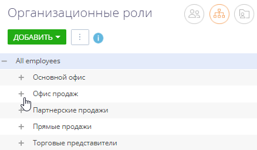
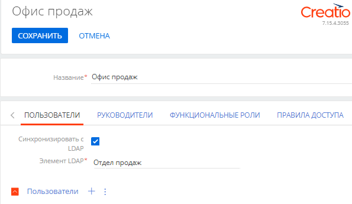
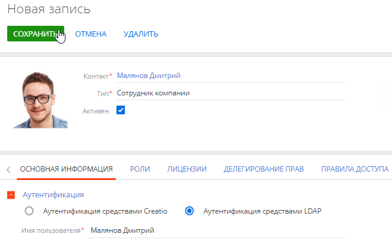
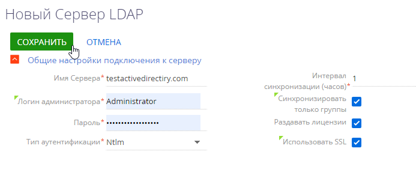
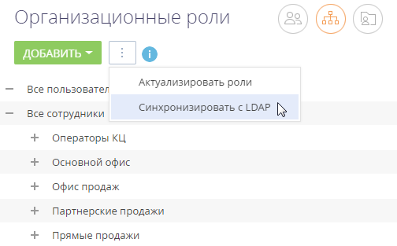

Синхронизация с каталогом LDAP позволяет автоматизировать управление учетными записями пользователей в Creatio. Пользователи, синхронизированные с LDAP, могут использовать свое доменное имя пользователя и пароль для входа в систему.
В системе поддерживаются следующие реализации LDAP: Active Directory и OpenLDAP.
Процедуру синхронизации можно условно разделить на три этапа:
-
Настройка интеграции с LDAP. Выполняется однократно либо при изменении структуры синхронизируемого каталога LDAP. Настройка необходима, чтобы была доступна остальная функциональность по синхронизации с LDAP. Также необходимо настроить фильтрацию пользователей Active Directory для определения параметров синхронизации. Подробнее: Настроить фильтры Active Directory.
-
Привязка элементов (пользователей и элементов организационной структуры) Creatio к соответствующим элементам каталога. Выполняется при добавлении новых пользователей либо организационных ролей. Вы можете привязать уже зарегистрированных пользователей Creatio либо импортировать пользователей из Active Directory.
-
Синхронизация пользователей и элементов организационной структуры Creatio со связанными элементами каталога LDAP. Действие необходимо для обновления данных в соответствии с изменениями, произошедшими в каталоге LDAP с момента предыдущей синхронизации. Выполняется регулярно: автоматически либо по действию Синхронизировать с LDAP раздела Организационные роли.
После синхронизации пользователи смогут авторизоваться с помощью LDAP. Подробнее: Настроить аутентификацию c LDAP.
Настроить интеграцию с LDAP
Настройка интеграции с LDAP предусматривает настройку связи элементов каталога LDAP с пользователями и ролями Creatio. Для выполнения настройки необходимо обладать базовыми знаниями структуры каталога LDAP, с которым выполняется интеграция.
В статье приведены примеры настройки LDAP для Active Directory и OpenLDAP.
- Откройте дизайнер системы, например, по кнопке
 .
. - В группе “Импорт и интеграции” перейдите по ссылке “Настройка интеграции с LDAP”. Откроется страница настроек. Выделенные поля нужно обязательно настроить. Для остальных можно использовать значения по умолчанию.
1. Настроить подключение к серверу
Укажите общие настройки подключения к серверу:
-
Имя сервера — имя или IP-адрес сервера LDAP.
-
Тип аутентификации — выбор протокола соединения с LDAP-сервером. Тип аутентификации определяется используемым сервером LDAP, а также требованиями к защищенности аутентификации. Например, выберите тип “Ntlm” для аутентификации “NT LanManager”, поддерживаемой Windows.
-
Логин администратора, Пароль — учетные данные администратора. Если сервер Creatio установлен на Linux, то используйте формат “domain\login“.
-
Интервал синхронизации (часов) — интервал, по которому будет происходить автоматическая синхронизация пользователей с LDAP. Подробнее: Запустить синхронизацию с LDAP.
-
Синхронизировать только группы — установка признака автоматически деактивирует в Creatio пользователей, вручную исключенных из синхронизируемых групп в каталоге LDAP и активирует в Creatio пользователей, добавленных вручную в синхронизируемые с приложением LDAP группы.
-
Раздавать лицензии — установка признака обеспечивает автоматическую выдачу лицензий при синхронизации пользователей по LDAP.
-
Использовать SSL — установка признака активирует синхронизацию с использованием сертификата SSL. При установке признака укажите в поле Имя Сервера значение в формате "сервер:порт".
Значение порта по умолчанию для LDAPS-соединения — "636". Синхронизация по LDAPS поддерживается только в приложении на Windows.
Значение порта по умолчанию для LDAP-соединения — "389".
2. Настроить синхронизацию пользователей
Для настройки синхронизации пользователей укажите атрибуты элементов каталога LDAP, из которых будут импортированы данные о пользователях:
-
Укажите обязательные атрибуты:
-
Имя домена — уникальное имя элемента организационной структуры LDAP, в который входят синхронизируемые пользователи. При этом для синхронизации будут доступны только те пользователи, которые входят в указанный элемент либо в подчиненные ему элементы, вне зависимости от уровня вложенности. Например, если вы укажете корневой элемент структуры каталога, то для синхронизации будут доступны все пользователи в каталоге.
-
ФИО пользователя — атрибут LDAP, который содержит имя и фамилию пользователя LDAP. Значение атрибута используется для автоматического заполнения поля ФИО страницы контакта при импорте пользователей. Например, ФИО пользователя может содержать атрибут “name” или “cn” (Common Name).
-
Имя пользователя — атрибут, который содержит имя пользователя LDAP, используемое для входа в систему. Пользователь, учетная запись которого синхронизирована с LDAP, будет входить в систему под этим именем. Например, “sAMAccountName”.
-
Уникальный идентификатор пользователя — атрибут, который может быть использован в качестве уникального идентификатора пользователя. Значение указанного атрибута должно быть уникальным для каждого пользователя.
-
Атрибут даты изменения — атрибут, в который автоматически записывается дата и время последнего изменения элемента LDAP.
-
-
При необходимости укажите дополнительные атрибуты, из которых будет взята информация для автоматического заполнения страницы контакта пользователя:
-
Имя организации — атрибут с названием организации, в которой работает пользователь. Используется для заполнения поля Контрагент страницы контакта. При синхронизации в поле указывается контрагент, название которого полностью соответствует значению указанного атрибута.
-
Должность — атрибут, который содержит должность пользователя. Используется для заполнения поля Должность страницы контакта. При синхронизации будет выбрана из справочника должность, название которой полностью соответствует значению указанного атрибута.
-
Номер телефона — атрибут, который содержит номер рабочего телефона пользователя. Используется для заполнения поля Рабочий телефон страницы контакта.
-
E-mail — атрибут, который содержит адрес электронной почты пользователя. Используется для заполнения поля Email страницы контакта.
-
3. Настроить синхронизацию групп пользователей LDAP с ролями Creatio
Настройка синхронизации групп обеспечивает возможность привязки групп LDAP к элементам организационной структуры Creatio. Для настройки укажите атрибуты элементов каталога LDAP, из которых будут импортированы данные о группах:
-
Название группы LDAP — атрибут, который содержит название группы пользователей в LDAP. Например, здесь можно указать атрибут “cn” (“Common Name”).
-
Идентификатор группы — атрибут, который может быть использован в качестве уникального идентификатора группы. Значение указанного атрибута должно быть уникальным для каждой группы. Например, может быть использован атрибут “objectSid”.
-
Имя домена групп — уникальное имя элемента организационной структуры LDAP, в который входят синхронизируемые группы. Для синхронизации будут доступны только те группы, которые входят в указанный элемент либо в подчиненные ему элементы независимо от уровня вложенности. Например, если вы укажете корневой элемент структуры каталога, то для синхронизации будут доступны все группы в каталоге.
4. Настроить условия фильтрации
Настройка условий фильтрации позволяет определить, по каким критериям элементы LDAP будут включаться в список синхронизируемых групп и пользователей. Укажите общие настройки подключения к серверу для Active Directory:
-
Список пользователей — фильтр, по которому из общего списка элементов каталога LDAP будут выбраны только те, которые будут синхронизированы с пользователями Creatio. Фильтр должен выбирать только активные элементы.
-
Список групп — фильтр, по которому будут выбраны только элементы LDAP для синхронизации с элементами организационной структуры Creatio (организационными ролями). Фильтр должен выбирать только активные элементы.
-
Список пользователей группы — фильтр для получения списка пользователей, которые входят в группу LDAP. Вхождение пользователя в группу определяется одним или несколькими атрибутами. Например, в большинстве каталогов используется такой атрибут, как “memberOf”. Фильтр (memberOf=[#LDAPGroupDN#]) содержит макрос Creatio и приведет к получению всех объектов (пользователей), которые входят в группу [#LDAPGroupDN#].
Привязать элементы LDAP к пользователям и ролям Creatio
В Creatio существует возможность синхронизации организационных и функциональных ролей пользователей системы с группами Active Directory.
Вы можете перенести в приложение организационную структуру компании и настройки всех ролей из Active Directory после выполнения синхронизации с LDAP.
Настроить синхронизацию организационных ролей Creatio и групп Active Directory
-
Перейдите в дизайнер системы, например, по кнопке
. -
В блоке “Пользователи и администрирование” перейдите по ссылке “Организационные роли”.
-
На открывшейся странице выберите из дерева групп роль, для которой вы хотите настроить синхронизацию (Рис. 3).
Если нужной роли в дереве групп нет, то нажмите кнопку Добавить и выберите “Организацию” или “Подразделение” в зависимости от того, какую роль необходимо добавить. На открывшейся странице укажите название группы.
Рис. 3 — Выбор организационной роли для настройки синхронизации -
На вкладке Пользователи установите признак Синхронизировать с LDAP. В поле Элемент LDAP выберите группу Active Directory, соответствующую данной организационной роли в Creatio (Рис. 4).
Рис. 4 — Выбор группы Active Directory для настройки синхронизации -
Если необходимо, то добавьте новых пользователей на детали Пользователи, нажав кнопку
 .
.Чтобы синхронизировать большое количество пользователей, которые еще не были зарегистрированы в Creatio, рекомендуем импортировать их из каталога LDAP. Подробнее: Импортировать новых пользователей из Active Directory.
- Примените настройки по кнопке Сохранить.
В результате при следующей синхронизации будет синхронизироваться и выбранная организационная роль.
Настроить синхронизацию функциональных ролей Creatio и групп Active Directory
-
Перейдите в дизайнер системы, например, по кнопке
. -
В блоке “Пользователи и администрирование” перейдите по ссылке “Функциональные роли”.
-
Дальнейшие настройки аналогичны пунктам 3–5 настроек синхронизации организационных ролей Creatio и групп Active Directory, описанным выше.
Связать учетные записи пользователей Creatio и пользователей LDAP
-
Перейдите в дизайнер системы, например, по кнопке
. -
В блоке “Пользователи и администрирование” перейдите по ссылке “Организационные роли” либо “Функциональные роли” в зависимости от того, для пользователей каких групп вы хотите настроить синхронизацию.
-
На открывшейся странице выберите роль, в которую входит нужный пользователь.
-
Перейдите на вкладку Пользователи, выберите строку, содержащую данные нужного пользователя, и с помощью двойного клика откройте его страницу.
-
На вкладке Основная информация выберите опцию Аутентификация средствами LDAP.
-
В поле Имя пользователя выберите необходимого пользователя LDAP.
-
Примените настройки по кнопке Сохранить (Рис. 5).
Рис. 5 — Привязка пользователя
В результате выбранный пользователь Creatio будет связан с пользователем LDAP и сможет входить в систему, используя имя пользователя и пароль, которые хранятся в каталоге LDAP (например, имя и пароль доменного пользователя).
В процессе синхронизации изменения, которые произошли с пользователями и группами LDAP, переносятся на связанные с ними учетные записи пользователей и элементы организационной структуры Creatio.
Запустить синхронизацию с LDAP
Настроить автоматическую синхронизацию
-
Откройте дизайнер системы, например, по кнопке
в правом верхнем углу приложения. -
В группе “Импорт и интеграции” кликните по ссылке “Настройка интеграции с LDAP”.
-
На открывшейся странице заполните поле Интервал синхронизации (часов). Автоматическая синхронизация пользователей с LDAP будет выполняться с указанным интервалом.
-
Нажмите кнопку Сохранить (Рис. 6).
Рис. 6 — Сохранение заполненной страницы интеграции с LDAP
После сохранения страницы интеграции с LDAP автоматически запустится синхронизация. При этом будет запущен процесс “Запустить импорт элементов с LDAP” (Рис. 7).
Запустить синхронизацию вручную
-
Откройте дизайнер системы, например, по кнопке
в правом верхнем углу приложения. -
В группе “Пользователи и администрирование” кликните по ссылке “Организационные роли”.
-
В меню действий раздела выберите действие Синхронизировать с LDAP (Рис. 8). При этом запустится процесс “Запустить синхронизацию с LDAP”, который в свою очередь вызывает процесс “Синхронизировать данные о пользователях с LDAP” (Рис. 9).
Рис. 8 — Действие Синхронизировать с LDAP
После завершения процесса синхронизации будет отображено информационное сообщение.
Результаты синхронизации
-
Если пользователь LDAP более не входит в список активных пользователей, то на странице синхронизируемого с ним пользователя Creatio будет снят признак Активен, и он не сможет залогиниться.
-
Если ранее неактивный пользователь LDAP был активирован, то на странице синхронизируемого с ним пользователя Creatio будет установлен признак Активен.
-
Если пользователь LDAP либо группа пользователей LDAP были переименованы, то будут переименованы и синхронизированные с ними пользователь/роль Creatio.
-
В случае установки признака в поле Синхронизировать только группы при исключении пользователя LDAP из группы LDAP, связанной с элементом организационной структуры Creatio, синхронизируемый с ним пользователь Creatio будет деактивирован и исключен из соответствующего элемента организационной структуры Creatio.
-
В случае установки признака в поле Синхронизировать только группы при добавлении пользователя в группу LDAP, связанную с элементом организационной структуры Creatio, связанный с ним пользователь Creatio будет добавлен в соответствующий элемент структуры и активирован.
-
Если в синхронизируемый элемент LDAP были включены новые пользователи, ранее не синхронизированные с Creatio, то пользователи будут импортированы в Creatio.
-
Если в Creatio есть пользователи (не импортированные из LDAP) с именами, совпадающими с именами пользователей в LDAP, то их синхронизация не выполняется.
-
Если синхронизированный пользователь LDAP был удален из группы, связанной с элементом организационной структуры Creatio, то соответствующий пользователь останется активным в Creatio, но не сможет залогиниться.
-
Всем синхронизированным пользователям будут предоставлены лицензии, если установлен соответствующий признак. Подробнее: Настроить подключение к серверу.